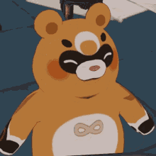

Welcome to Wanmin Restaurant, nestled in the heart of Chihu Rock, Liyue Harbor.
We're a humble establishment led by Chef Mao, serving dishes that bring warmth to every table.
From daily ingredients to time-honored recipes, our aim is to keep every traveler well fed.
Some say our dream is to unify all cuisines of Teyvat — we just say, come hungry.
Whether you dine in or take out, we promise a taste worth remembering.